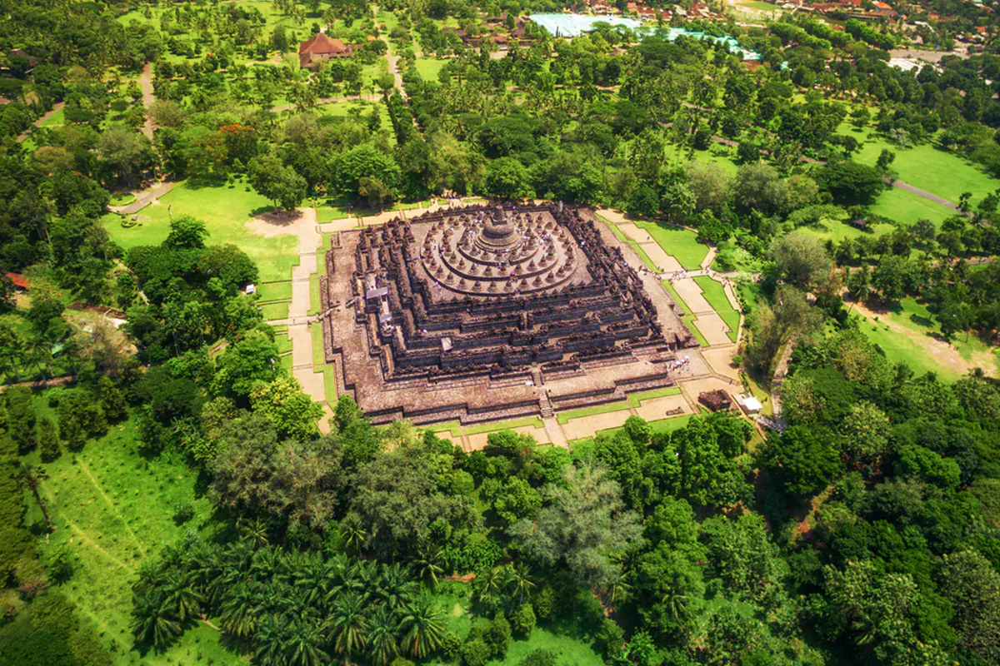

Candi Borobudur, Pusaka Kolosal Magelang, Jawa Tengah
Sobat Pesona pastinya sudah tidak asing kan dengan Candi Borobudur? Terletak di Kabupaten Magelang, Jawa Tengah, candi yang sangat megah dan rupawan ini telah dikenal oleh wisatawan lokal maupun mancanegara sebagai kuil Buddha terbesar di dunia. Wajar saja, karena Candi Borobudur memiliki luas sekitar 2500 meter persegi, dengan panjang 121,66 meter, lebar 121,38 meter, dan tinggi 35,40 meter.
Selain dari skalanya yang besar, Candi yang sangat legendaris ini tentunya juga menyimpan beragam fakta unik, serta berbagai macam hal menarik yang bisa Sobat Pesona temui saat berkunjung kesini. Sebelum Sobat Pesona beranjak ke Candi Borobudur, simak dulu yuk ulasan lengkapnya di bawah ini!
Sejarah
Candi legendaris ini diperkirakan dibangun pada abad ke-8, tepatnya sekitar tahun 750-an masehi pada masa pemerintahan dinasti Syailendra. Pembangunannya diperkirakan berlangsung sekitar 75 tahun sampai akhirnya rampung pada saat pemerintahan raja Samaratungga berlangsung. Candi Borobudur terletak diatas bukit hijau yang asri di mana Sobat Pesona bisa menyaksikan bukit-bukit hijau lain di sekitarnya. Bangunannya sendiri terdiri atas jutaan blok batu yang dibuat kedalam tiga struktur yang menggambarkan tingkatan alam semesta menurut filsafat Buddha. Bangunan kolosal ini juga dihiasi oleh 2.672 panel relief dan 504 patung Buddha.

Terjadinya erupsi Gunung Merapi yang dahsyat pada sekitar tahun 1006 menyebabkan Candi Borobudur tertimbun oleh debu vulkanik selama ratusan tahun lamanya. Beberapa abad kemudian, Candi Borobudur akhirnya ditemukan kembali pada tahun 1814 oleh seorang insinyur Belanda bernama Hermanus Christiaan Cornelius, ketika kerajaan Inggris yang diwakili oleh Thomas Stamford Raffles menduduki beberapa bagian pulau Jawa, termasuk Jawa Tengah. Setelah Indonesia merdeka, pada akhir tahun 60-an pemerintah bekerja sama dengan UNESCO untuk merenovasi Candi Borobudur selama bertahun-tahun, sampai akhirnya UNESCO menetapkan mahakarya agung tersebut sebagai Situs Warisan Dunia di tahun 1991.
Destinasi
Tak hanya menawarkan keajaiban dunia, di sini Sobat Pesona juga bisa menemukan beraneka ragam objek wisata lainnya yang tidak kalah menarik. Di sekitar candi, terdapat tiga museum yang Sobat Pesona bisa kunjungi untuk menambah wawasan, yaitu Museum Borobudur, Museum Kapal Samudraraksa, dan Museum MURI. Jika ada di antara Sobat Pesona yang ingin melihat pemandangan luar biasa Candi Borobudur dari kejauhan, maka Sobat Pesona wajib mendatangi Punthuk Setumbu yang berlokasi di bagian barat Candi Borobudur. Di sini, Sobat Pesona juga bisa menyaksikan indahnya matahari terbit atau terbenam di masing-masing ufuk.

Tak jauh dari Punthuk Setumbu, Sobat Pesona juga bisa menemukan sebuah bangunan yang memiliki bentuk unik jika berjalan ke arah utara. Bangunan yang berbentuk seperti ayam ini adalah gereja yang dibangun pada tahun 90-an dan dikenal sebagai Gereja Ayam oleh warga setempat. Jika Sobat Pesona masih belum puas, di bagian timur Candi Borobudur terdapat tiga buah candi kecil yang juga tak kalah bagus, yaitu Candi Pawon, Candi Ngawen, dan Candi Mendut. Ingin menghabiskan waktu lebih lama lagi di sekitar Candi Borobudur? Coba menginap ke Desa Wisata yang ada di sekitar Candi Borobudur aja! Diantaranya seperti Desa Wanurejo, Desa Karangrejo, Desa Tanjungsari, Desa Giritengah, Desa Majaksingi, dan Desa Candirejo.
Suggested for You
27-10-2023
Pura ikonik di Danau Beratan di Dataran Tinggi Bedugul
27-10-2023
Labuan Bajo, Sepetak Surga yang Terletak di Indonesia Timur
27-10-2023